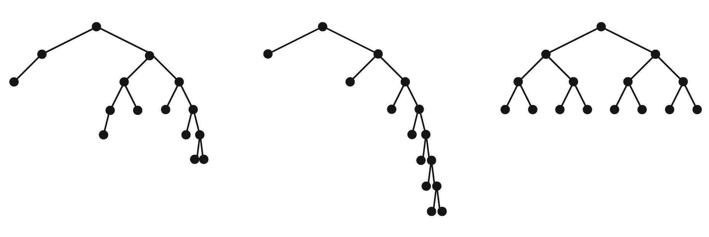
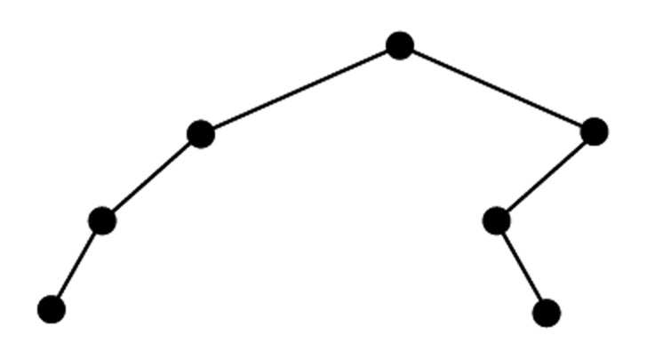
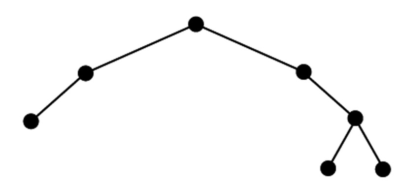
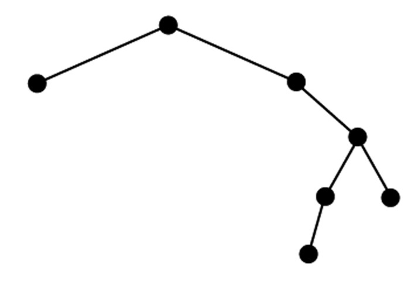
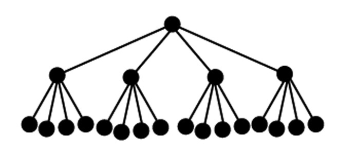

{% raw %}

<article>
<h1>Lesson 2: Introduction</h1><h1>to Logarithms</h1>
  <section class="development">


    <h2>Introduction</h2>

    <p>The following tree diagrams, which are called binary trees,
    are all based on the same system for organizing
    information.</p>

    <p>Each item (phone number, animal, letter) in the tree is
    called a “node”, and the nodes immediately below a node are
    called its “children”. As you can see, each node in the tree
    has at most two children. Furthermore, notice that as you start
    at the top and travel down the branches, every descendant down
    the right branch of a given node is somehow more than (or
    larger than, or after) that node, whereas every descendent to
    the left is somehow less.</p>

    <div class="problem" data-problem-number="1">
      <p>Let’s say we wanted to add the number “866-3162” to the
      phone number tree above. Even though it comes after
      “393-1765”, it would be wrong to hang it to the right of that
      number, because that would still be down the left branch from
      “555-1791”. Where should “866-3162” go? How about “squirrel”
      and “k” in their respective trees? There is only one correct
      answer for each of these.</p>
    </div>

    <div class="problem" data-problem-number="2">
      <p>Ask a group member to write down, without showing you, a
      list of 10 different numbers. Your group member will be
      reading the list to you one number at a time, and your job is
      to organize them into a binary search tree as they’re being
      read to you. There’s one rule: unlike in nature, these trees
      grow down. This means, for example, that the first number
      your group member reads will have to be the one at the very
      top of your tree.</p>

      <p class="problem-part">. Have your group member read the
      numbers to you, giving you time to add each number to the
      tree, without rearranging the ones you’ve added so far,
      before reading the next one out.</p>

      <p class="problem-part">. What would have happened if the
      numbers had been read to you in a different order? Try it and
      see.</p>
    </div>

    <p>In these small examples, it’s quite easy to see all the
    information at once, so they’re not necessarily any better than
    just writing out a simple list. Imagine, though, that instead
    of the 7 phone numbers in the first diagram, you had a binary
    tree with hundreds of phone numbers in it. (By the way, this is
    essentially how a cell phone really does store phone
    numbers.)</p>

    <div class="problem" data-problem-number="3">
      <p>Alice the ant starts at the top node of this large phone
      number tree and wants to know if the exterminator’s number,
      which she knows by heart, is in it. (She’s hoping it’s not!)
      Because Alice is so small, she can only read one node at a
      time, and she has to crawl down a branch to read another
      number.</p>

      <p class="problem-part">. Describe a simple algorithm she can
      use to find out where the exterminator’s number would have to
      be, if it were in the tree.</p>

      <p class="problem-part">. Which of the following trees do you
      think Alice would rather search? Remember the old saying:
      when you’re trying to find something, it’s always in the last
      place you look!</p>
    </div>

    <figure>
      
    </figure>

    <h2>Development</h2>

    <p>You saw from problem 2 that there is more than one possible
    “shape” that a binary tree can take, even with the same raw
    data.</p>

    <div class="problem" data-problem-number="4">
      <p>For each of the following, come up with a sequence of
      items, which, if you used your approach from problem 2, would
      end up in a binary tree with the given shape. (The items can
      be anything you want: names, numbers, etc.)</p>

      <p class="problem-part">$a$.  b.
      </p>

      <p class="problem-part">$c$. </p>
    </div>

    <p>The depth of a node in a tree is the number of branches it
    is away from the top. So, for example, “chicken” in the animal
    tree has a depth of 2. The depth of the whole tree is just the
    depth of its deepest node. (So the animal tree has a depth of
    3, because “mouse”, the deepest node, has a depth of 3.)</p>

    <div class="problem" data-problem-number="5">
      <p>Rearrange the lists of items you used in problem 4 so that
      the resulting trees have the minimum possible depth.</p>
    </div>

    <div class="problem" data-problem-number="6">
      <p>Do the same for the list your group used in problem 2.</p>
    </div>

    <p>The trees you made in problem 5 are examples of balanced
    binary trees, whereas the one you made in problem 6 is not
    balanced. To see why, think of the tree like a hanging mobile:
    if each node is perfectly balanced, then the whole thing is
    balanced.</p>

    <div class="problem" data-problem-number="7">
      <p>Is it possible to arrange the numbers 1 through 7 into a
      balanced binary tree? How about 1 through 12? 1 through
      15?</p>
    </div>

    <div class="problem" data-problem-number="8">
      <p>A leaf of a tree is a node that doesn’t have any children.
      Notice that in a balanced binary tree, all the leaves have
      the same depth. If a balanced binary tree has 512 leaves,
      then what is the depth of the tree?</p>
    </div>

    <div class="problem" data-problem-number="9">
      <p>Of course, not all trees have to be binary. If you
      continued
      the regular pattern of the tree below, how many leaves would
      the next level of the tree have? How deep would it need to be
      in order to have 4096 leaves?</p>

<p>      </p>
    </div>

    <div class="problem" data-problem-number="10">
      <p>On some ancient computers, passwords had to consist of
      only the letters A through E. If I tell you that on these
      computers, there were 15625 passwords, and all of the
      passwords had to be the same length, can you say how many
      letters were required in a password?</p>
    </div>

    <p>In the last three problems, you were effectively looking for
    exponents. You might have found yourself asking, in rather
    awkward English, the question:</p>

    <p>“5 to the what power equals 15625?”</p>

    <p>Fortunately, there’s a mathematical term for the number
    we’re looking for here: it’s called “the logarithm, base 5, of
    15625”. Symbolically, it’s written “${\log _5}\left( {15625}
    \right)$”.</p>

    <p>So our awkward question is now both easier to pronounce,</p>

    <p>“What is the log, base 5, of 15625?”</p>

    <p>and easier to write,</p>

    <p>“”.</p>

    <div class="problem" data-problem-number="11">
      <p>Translate the equation above into an equation involving
      exponents.</p>
    </div>

    <div class="problem" data-problem-number="12">
      <p>Go back and set up problems 8-10 with equations using log
      notation. (No need to solve them again—just set them up.)</p>
    </div>

    <div class="problem" data-problem-number="13">
      <p>Use symbols to create a formal definition for what it
      means to say that “y is the log, base b, of x”. Your
      definition should have the form:
      “(equation involving log) if and only if (equation
      involving
      exponents)”.</p>

<p>      This is something you can refer to whenever you need to
      translate to and from “log” notation.</p>
    </div>

    <h2>Practice</h2>

    <div class="problem" data-problem-number="14">
      <p>Consider the following binary tree.</p>
    </div>

    <figure>
      
    </figure>

    <p class="problem-part">. Assuming this tree was built
    similarly to the one you built in problem 2, what order could
    the letters have been added in?</p>

    <p class="problem-part">. What ordering would you use to
    produce a tree with the greatest possible depth?</p>

    <div class="problem" data-problem-number="15">
      <p>Determine the depth of each of the trees described
      below.</p>

      <p class="problem-part">. A balanced binary tree that has
      1,048,576 leaves.</p>

      <p class="problem-part">. Every node that isn’t a leaf has 4
      children. There are 64 leaves.</p>

      <p class="problem-part">. Every non-leaf node has 6 children,
      and there are X leaves. (Answer in terms of X, using log
      notation.)</p>
    </div>

    <div class="problem" data-problem-number="16">
      <p>Unlike on this planet, primordial amoebas from Mars
      reproduce by splitting into three children. If life on Mars
      started with a single amoeba, but now there are 1,594,323
      amoebas, then:</p>

      <p class="problem-part">. Estimate, without using a
      calculator, for how many
      amoeba-generations there has been life on Mars.</p>

      <p class="problem-part">. Now rewrite the question as a
      logarithm, and find
      an exact answer (calculator allowed this time).</p>
    </div>

    <div class="problem" data-problem-number="17">
      <p>Translate the following awkward bits of English into log
      notation. (Notice that some are complete sentences, and
      others are fragments.)</p>

      <p class="problem-part">. “What number could I raise 4 to, to
      get 64?”</p>

      <p class="problem-part">. “The power of 3 that gives you
      81”</p>

      <p class="problem-part">. “4 to the something-or-other power
      equals 1024.”</p>

      <p class="problem-part">. “The number to which 6 must be
      raised in order to produce 216”</p>

      <p class="problem-part">. “The number of times, starting with
      1, that you have to double to get x”</p>
    </div>

    <div class="problem" data-problem-number="18">
      <p>Calculate the value of each of the following:</p>

      <p class="problem-part">. ${\log _3}\left( {81} \right)$</p>

      <p class="problem-part">. ${\log _{13}}\left( {169}
      \right)$</p>

      <p class="problem-part">. ${\log _8}\left( {512} \right)$</p>

      <p class="problem-part">. ${\log _{11}}\left( {14,641}
      \right)$</p>

      <p class="problem-part">. ${\log _{100}}\left( {1,000,000}
      \right)$</p>

      <p class="problem-part">. ${\log _{1,000}}\left( {1,000,000}
      \right)$</p>

      <p class="problem-part">. ${\log _{10}}\left( {1,000,000}
      \right)$</p>

      <p class="problem-part">. ${\log _{15}}\left( {11,390,625}
      \right)$</p>
    </div>

    <h2>Going Further</h2>

    <div class="problem" data-problem-number="19">
      <p>Start with $x = 243$. Check with your calculator that
      ${\log _3}\left( x \right) = 5$. How much do you have to add
      to x to make ${\log _3}\left( x \right)$ go up by one? Up by
      two? Three?</p>
    </div>

    <div class="problem" data-problem-number="20">
      <p>What is the value of ${\log _9}\left( 3 \right)$?</p>
    </div>

    <p>Since the number 3 is not one of the powers of 9, it’s not
    clear just what this question means, or how to find out what
    the value of ${\log _9}\left( 3 \right)$ would be.
    Remember, though, that it’s also possible to have non-integer
    exponents. Let’s see if we can use that to find an answer.</p>

    <div class="problem" data-problem-number="21">
      <p>Start by rewriting ${\log _9}\left( 3 \right) = x$ in
      exponential form. Then, try tinkering with different ways to
      write this equation by applying some of your rules of
      exponents.</p>
    </div>

    <p>You might have noticed in the problem above that it was much
    simpler to solve once you’d rewritten “3” as
    “${9^{{\raise0.5ex\hbox{$\scriptstyle 1$}
    \kern-0.1em/\kern-0.15em \lower0.25ex\hbox{$\scriptstyle
    2$}}}}$”. In the next problem, try using a similar strategy:
    tinker with different ways of rewriting things, using the
    definition of logarithms and your exponent rules. (You might
    want to take a minute with your group to remind yourselves of
    all the rules.)</p>

    <div class="problem" data-problem-number="22">
      <p>Find the value of each of the following without using a
      calculator.</p>

      <p class="problem-part">. ${\log _4}\left( {32} \right)$</p>

      <p class="problem-part">. ${\log _5}\left( {\frac{1}{{25}}}
      \right)$</p>

      <p class="problem-part">. ${\log _{10}}\left( {0.000000001}
      \right)$</p>

      <p class="problem-part">. ${\log _7}\left( 1 \right)$</p>
    </div>

    <div class="problem" data-problem-number="23">
      <p>Why can you be sure that ${\log _2}\left( {42} \right)$ is
      not an integer?</p>
    </div>

    <div class="problem" data-problem-number="24">
      <p>Find every number from 1 to 1 million whose base-10
      logarithm is an integer.</p>
    </div>

    <div class="problem" data-problem-number="25">
      <p>The “log” button on your calculator actually stands for
      “${\log _{10}}$淥| ”.</p>

      <p class="problem-part">. Before trying it out, can you
      estimate roughly what ${\log _{10}}\left( {4000} \right)$ will be? Check it on the calculator.</p>

      <p class="problem-part">. What are ${\log _{10}}\left( {40}
      \right)$, ${\log _{10}}\left( {40,000} \right)$, and${\log
      _{10}}\left( 4 \right)$? What’s the pattern?</p>
    </div>

    <div class="problem" data-problem-number="26">
      <p>Pick several three-digit numbers, and use your calculator
      to find the base-10 log of each one. Now do the same with
      several four-, five-, and six-digit numbers. What do you
      notice?</p>
    </div>

    <div class="problem" data-problem-number="27">
      <p>If ${\log _{10}}\left( 2 \right) = 0.301$, then what is
      the value of ${\log _{10}}\left( {2 \cdot {{10}^a}} \right)$?</p>
    </div>

    <p>If you want to see why your answer to the previous problem
    is true, try using
    the definition of log and your exponent rules to tinker with
    different ways of rewriting things, like you did earlier in
    problems 20-22. This will also help with the next two
    problems.</p>

    <div class="problem" data-problem-number="28">
      <p>If ${\log _2}\left( x \right) = 1.125$ and ${\log
      _2}\left( y \right) = 2.875$, then what is the value of
      ${\log _2}\left( {x \cdot y} \right)$?</p>
    </div>

    <div class="problem" data-problem-number="29">
      <p>If ${\log _4}\left( x \right) = 1.20$ and ${\log _4}\left(
      y \right) = 2.009$, then what is the value of ${\log
      _4}\left( {x \cdot y} \right)$?</p>
    </div>

    <h2>Practice</h2>

    <div class="problem" data-problem-number="30">
      <p>Put the following in order from least to greatest:
      \[{\log _2}(47)\] , 2, \[{\log _3}(47)\] , 3, \[{\log
      _2}(35)\] , 4, , 5, \[{\log _3}(240)\] Ǿ .</p>
    </div>

    <div class="problem" data-problem-number="31">
      <p>What are the nearest integers above and below ${\log
      _2}\left( {24} \right)$? Which of the two is the
      closest?</p>
    </div>

    <div class="problem" data-problem-number="32">
      <p>Find the value of each of the following.</p>

      <p class="problem-part">. ${\log _{16}}\left( 4 \right)$</p>

      <p class="problem-part">. ${\log _3}\left( {\frac{1}{9}}
      \right)$</p>

      <p class="problem-part">. ${\log _4}\left( {.5} \right)$</p>

      <p class="problem-part">. ${\log _2}\left( {\sqrt 2 }
      \right)$</p>
    </div>

    <div class="problem" data-problem-number="33">
      <p>Why does your calculator give you an error when you input
      “”?</p>
    </div>

    <div class="problem" data-problem-number="34">
      <p>Practice using the definition of logarithms and the rules
      of exponents to solve each of the following.</p>

      <p class="problem-part">. If ${\log _4}\left( x \right) =
      1.6$ and ${\log _4}\left( y \right) = 3.2$, then what is
      ${\log _4}\left( {xy} \right)$?</p>

      <p class="problem-part">. If ${\log _8}\left( x \right) = 6$, then what is ${\log _8}\left( {2x} \right)$?</p>
    </div>
  </section>

  <figure class="fig-md">
    
  </figure>

  <figure class="fig-md">
    
  </figure>

  <figure class="fig-md">
    
  </figure>

  <figure class="fig-md">
    
  </figure>

  <section class="problems">
  <h2>Problems</h2>
    <div class="problem" data-problem-number="35">
      <p>If ${\log _5}\left( x \right) = 5$ and ${\log _5}\left( y
      \right) = 7$,
      then what is the value of ${\log _5}\left( {\frac{y}{x}}
      \right)$?</p>
    </div>

    <div class="problem" data-problem-number="36">
      <p>If ${\log _3}\left( x \right) = 1.776$ and ${\log
      _3}\left( y \right) = 2.013$,
      then what is the value of ${\log _3}\left( {\frac{y}{x}}
      \right)$?
      (By the way: how old is the United States of America?)</p>
    </div>

    <div class="problem" data-problem-number="37">
      <p>Based on what you did in problems 28 and 29, complete the
      following generalization: “If ${\log _b}\left( x \right) = C$ and ${\log _b}\left( y \right) = D$,
      then \[{\log _b}\left( {xy} \right) = \] ….” Now prove it
      using algebra.</p>
    </div>

    <div class="problem" data-problem-number="38">
      <p>Revise the generalization you wrote in the previous
      problem into an identity that relates ${\log _b}\left( {x
      \cdot y} \right)$ to ${\log _b}\left( x \right)$ and ${\log
      _b}\left( y \right)$. (Remember that an identity is just an
      equation that is always true, for all values of the variables
      involved.) This identity is going to come in handy, so write
      it down somewhere where it will be easy to refer to it.</p>
    </div>

    <div class="problem" data-problem-number="39">
      <p>Given that ${\log _2}\left( 5 \right) = 2.322$ and ${\log
      _2}\left( 3 \right) = 1.585$, what is the value of ${\log
      _2}\left( {15} \right)$?</p>
    </div>

    <div class="problem" data-problem-number="40">
      <p>State and prove an identity that relates ${\log _b}\left(
      {\frac{x}{y}} \right)$ to ${\log _b}\left( x \right)$ and
      ${\log _b}\left( y \right)$.</p>
    </div>

    <div class="problem" data-problem-number="41">
      <p>If \[{\log _3}\left( {10} \right) = 2.096\] , then what is
      the value of \[{\log _3}\left( {30} \right)\] ? How about
      \[{\log _3}\left( {100} \right)\] ?</p>
    </div>

    <div class="problem" data-problem-number="42">
      <p>Don’t use a calculator for this problem.</p>

      <p class="problem-part">. Simplify .</p>

      <p class="problem-part">. Simplify $\frac{{{x^5}{y^{ -
      3}}}}{{{x^{ - 1}}{y^2}}}$.</p>

      <p class="problem-part">. Solve for x: .</p>

      <p class="problem-part">. Simplify $\frac{{\sqrt {125}
      }}{{\sqrt {50} }}$.</p>

      <p class="problem-part">. If $\frac{1}{{{x^2}}} - \frac{1}{x}
      = 1$, find ${x^2} + x + 1$.</p>
    </div>

    <div class="problem" data-problem-number="43">
      <p>What is the value of ${\log _2}\left( {{4^{1005}}}
      \right)$?</p>
    </div>

    <div class="problem" data-problem-number="44">
      <p>For each of the following equations, use the log function
      of your calculator (and possibly some algebra) to approximate
      x to the nearest thousandth.</p>

      <p class="problem-part">. ${10^x} = 461.2$</p>

      <p class="problem-part">. $3 \cdot {10^x} = 5$</p>

      <p class="problem-part">. ${10^{x + 2}} = 50$</p>
    </div>

    <div class="problem" data-problem-number="45">
      <p>Mr. Golthramis was in a bad mood one day, and decided to
      take it out on his students by giving them this problem:
      “Write down, using no exponents, a number x such that .” The
      students, having recently learned the definition of log, were
      outraged, and refused to do the homework. Why?</p>
    </div>

    <div class="problem" data-problem-number="46">
      <p>Verify with your calculator that ${\log _3}\left( {12}
      \right) = 2.2619$. Now, find the values of , ${\log
      _3}\left( 4 \right)$, and .</p>
    </div>

    <div class="problem" data-problem-number="47">
      <p>According to the incomplete table below, ${\log _5}\left(
      {10} \right) = 1.4307$. Is this (approximately) correct?
      Correct it if not, and then complete the rest of the
      table.</p>
    </div>

    <table id="table-1" class="No-Table-Style table-style-override-1">
      <tbody>
        <tr>
          <td>
            A
          </td>

          <td>
            <p class="Table---Cell-Text">${\log _5}\left( A
            \right)$</p>
          </td>
        </tr>

        <tr>
          <td>
            2
          </td>

          <td></td>
        </tr>

        <tr>
          <td></td>

          <td>
            0.5
          </td>
        </tr>

        <tr>
          <td>
            4
          </td>

          <td></td>
        </tr>

        <tr>
          <td></td>

          <td>
            1
          </td>
        </tr>

        <tr>
          <td>
            8
          </td>

          <td></td>
        </tr>

        <tr>
          <td>
            10
          </td>

          <td>
            1.4307
          </td>
        </tr>

        <tr>
          <td>
            16
          </td>

          <td></td>
        </tr>

        <tr>
          <td></td>

          <td>
            2
          </td>
        </tr>

        <tr>
          <td></td>

          <td>
            2.1535
          </td>
        </tr>

        <tr>
          <td>
            50
          </td>

          <td></td>
        </tr>
      </tbody>
    </table>

    <div class="problem" data-problem-number="48">
      <p>Suppose we visualize some number L as a tree diagram with
      L leaves, and another number M as a tree with M leaves.
      Using these as building blocks, how could you build a tree to
      visualize the quantity $L \cdot M$? Can you use this to
      illustrate the multiplication and division identities of
      logarithms you proved? (It might help to use specific numbers
      first: try $L = 27$ and$M = 9$.)</p>
    </div>

    <div class="problem" data-problem-number="49">
      <p>Consider a balanced binary tree with a depth of D.</p>

      <p class="problem-part">. True or false: the total number
      of nodes in the tree will be $1 + 2 + {2^2} + ... + {2^D}$.</p>

      <p class="problem-part">. Find a simple formula for the total
      number of nodes in the tree. Answer in terms of D, and
      without using “…”. (Hint: try several small
      examples, and look for a pattern.)</p>
    </div>

    <div class="problem" data-problem-number="50">
      <p>If a balanced binary tree has 1023 nodes total, then how
      many of the nodes are leaves?</p>
    </div>

    <div class="problem" data-problem-number="51">
      <p>Have one of your group members make up a binary tree and
      show it to you. Your job is to add nodes to the tree until
      you have doubled the total number of nodes, while keeping the
      tree as “shallow” as
      possible. Try this a few times with trees of different sizes
      and shapes. If the original tree has N nodes, then how
      many
      additional levels of depth do you need?</p>
    </div>

    <div class="problem" data-problem-number="52">
      <p>If you build a binary tree by adding the numbers 5, 2, 3,
      7, 11, 17, and 13, in that order, the resulting tree would
      not be
      balanced. (Check this.) Instead of this,
      suppose you put these seven numbers into a hat and randomly
      chose one number at
      a time to add to the tree. What is the probability that your
      tree would be balanced?</p>
    </div>

    <div class="problem" data-problem-number="53">
      <p>Prove that each of the following are true:</p>

      <p class="problem-part">. ${\log _b}\left( {{x^2}} \right) =
      2 \cdot {\log _b}\left( x \right)$</p>

      <p class="problem-part">. \[{\log _b}({x^3}) = 3 \cdot {\log
      _b}x\]</p>

      <p class="problem-part">. ${\log _b}\left( {{x^4}} \right) =
      4 \cdot {\log _b}\left( x \right)$</p>

      <p class="problem-part">. ${\log _b}\left( {{x^5}} \right) =
      5 \cdot {\log _b}\left( x \right)$</p>
    </div>

    <div class="problem" data-problem-number="54">
      <p>Use the rule you just proved in the previous problem to
      solve each of the following for x, and give your answer to
      the nearest thousandth. (Hint: $A = C$ if and only if ${\log
      _b}A = {\log _b}C$ T'z .)</p>

      <p class="problem-part">. ${1.02^x} = 2$</p>

      <p class="problem-part">. \[{2^x} = 1000000\]</p>

      <p class="problem-part">. ${1.5^{x - 3}} = 21$</p>
    </div>

    <div class="problem" data-problem-number="55">
      <p>What is ${\log _{10}}\left( {{{\log }_{10}}\left(
      {one{\rm{ }}googol} \right)} \right)$?
      What is ${\log _{10}}\left( {{{\log }_{10}}\left( {{{\log
      }_{10}}\left( {one{\rm{ }}googolplex} \right)} \right)}
      \right)$?} ?</p>

<p>      (If you don’t know what a “googol” or “googolplex” is, Google
      them.)</p>
    </div>

    <div class="problem" data-problem-number="56">
      <p>Professor Arlo G. Smith poses the
      following questions:</p>

      <p class="problem-part">. What is the ratio of ${2^9}$ to
      ${2^5}$?
      What is the ratio of ${2^m}$ to ${2^n}$?</p>

      <p class="problem-part">. What is the ratio of $\log {2^9}$ to $\log {2^5}$?
      What is the ratio of $\log {2^m}$ to $\log {2^n}$?</p>

      <p class="problem-part">. What is the ratio of 100000000 to
      1000000? What is the ratio of $\log 100000000$ to $\log
      1000000$?</p>
    </div>

    <div class="problem" data-problem-number="57">
      <p>If:${\log _b}\left( X \right) = 3 \cdot {\log _b}\left( 2
      \right) + 2 \cdot {\log _b}\left( 3 \right) + {\log _b}\left(
      5 \right)$ then what is X?</p>
    </div>

    <div class="problem" data-problem-number="58">
      <p>Rewrite the expression ${\log _5}7 + {\log _5}15 - {\log
      _5}3$ as a single
      logarithm in the form ${\log _b}a$.</p>
    </div>

    <div class="problem" data-problem-number="59">
      <p>Unfortunately, your calculator does not have a built-in
      way to calculate ${\log _2}\left( {47} \right)$. However,
      using the definition and
      properties of logarithms, there is a way
      to figure this out with your calculator. Here’s a hint:
      re-write ${\log _2}\left( {47} \right) = x$ in exponential
      form, and then solve for x.</p>
    </div>

    <div class="problem" data-problem-number="60">
      <p>Can the ${\log _{10}}$ of an irrational number minus the
      ${\log _{10}}$ of a different irrational number ever equal a
      positive integer?
      Explain.</p>
    </div>

    <div class="problem" data-problem-number="61">
      <p>Solve each of the following equations, giving your answer
      to the nearest thousandth.</p>

      <p class="problem-part">. $1500 \cdot {1.13^t} =
      400000000000000000000000000000000000$</p>

      <p class="problem-part">. $3 \cdot {5^{x + 5}} = 8$</p>

      <p class="problem-part">. \[{\log _3}x - 2{\log _3}7 =
      1\]</p>

      <p class="problem-part">. \[{5^{x - 1}} = {2^{3x - 1}}\]</p>

      <p class="problem-part">. $7 \cdot {x^3} = 1492$</p>
    </div>

    <div class="problem" data-problem-number="62">
      <p>A binary tree has 6000 nodes in it. What are its minimum
      and maximum possible depths?</p>
    </div>

    <div class="problem" data-problem-number="63">
      <p>Recall the Number Devil guessing game from the previous
      lesson, where the Number Devil picks a number between 1 and
      15 and you have to guess it. When you guess, the Number Devil
      will tell you whether you’re correct, too high, or too low.
      If you use binary search, how many guesses will you need in
      the worst case? What if the Number Devil chose a
      number between 1 and 1 million?</p>
    </div>

    <div class="problem" data-problem-number="64">
      <p>That pesky bad coin you saw in the
      previous lesson is back. (Maybe the
      Number Devil brought it along.) You
      have 27 identical-looking coins. The bad coin is too light,
      and the rest all weigh exactly the same.</p>

      <p class="problem-part">. Using a balance scale, how many
      weighings do you need to find the bad coin?</p>

      <p class="problem-part">. How many weighings would it take to
      find one bad coin among 2187 coins? How about 1 million
      coins?</p>
    </div>

    <div class="problem" data-problem-number="65">
      <p>If you look up logarithms on the Web, you’re likely to see
      the following sentence, which is meant to be a helpful
      reminder when you’re learning what logarithms are:</p>

      <p>“A logarithm is an exponent.”</p>

<p>      What do you think people mean by this?</p>
    </div>

    <div class="problem" data-problem-number="66">
      <p>If is a geometric sequence,
      then what kind of sequence is?</p>
    </div>

    <div class="problem" data-problem-number="67">
      <p>Recall that the Floor operation from the previous lesson
      takes a positive number x and chops off anything after the
      decimal point. Similarly, the Ceiling function essentially
      “rounds up”: e.g., ${\mathop{\rm Ceiling}\nolimits} \left( 3
      \right) = 3$, and ${\mathop{\rm Ceiling}\nolimits} \left(
      {2.0001} \right) = 3$. If N is a positive integer, what does
      ${\mathop{\rm Ceiling}\nolimits} \left( {{{\log }_{10}}\left(
      N \right)} \right)$ tell you about N?</p>
    </div>

    <div class="problem" data-problem-number="68">
      <p>If you double a three-digit number 100 times, how many
      digits will the resulting number have?</p>
    </div>

    <div class="problem" data-problem-number="69">
      <p>Prove that squaring a number at most
      doubles the number of digits in the
      number.</p>
    </div>

    <div class="problem" data-problem-number="70">
      <p>Prove that ${\log _b}\left( {\frac{1}{x}} \right) = -
      {\log _b}\left( x \right)$.</p>
    </div>

    <div class="problem" data-problem-number="71">
      <p>Generalize what you did in problem 59 into an identity
      about logarithms.</p>
    </div>

    <div class="problem" data-problem-number="72">
      <p>What is${\log _{10}}\left( 2 \right) \cdot {\log _2}\left(
      {10} \right)$?
      How about ${\log _{10}}\left( 3 \right) \cdot {\log _3}\left(
      {10} \right)$?
      And ${\log _7}\left( 3 \right) \cdot {\log _3}\left( 7
      \right)$?</p>
    </div>

    <div class="problem" data-problem-number="73">
      <p>In a balanced ternary tree, every non-leaf node has three
      children, and all the leaves have the same depth. How many
      nodes
      are in a balanced ternary tree with a depth of 10?</p>
    </div>
  </section>

  <section>
    <h2>Exploring
    in
    Depth</h2>
  </section>
</article>

{% endraw %}

